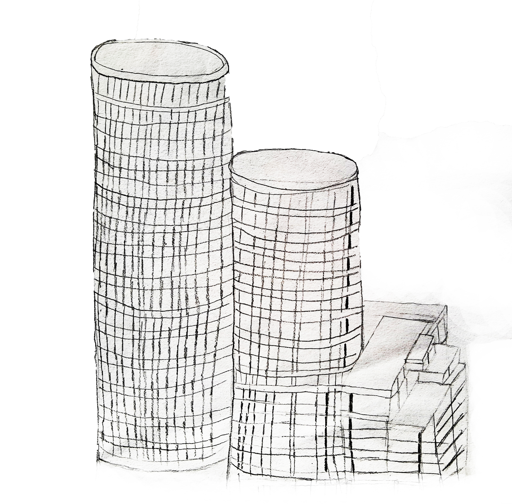

Нема случајних грађевина, издвојених из људског друштва у коме су никле, и његових потреба, жеља и схватања, као што нема произвољних линија и безразложних облика у неимарству. А постанак и живот сваке велике, лепе и корисне грађевине, као и њен однос према насељу у коме је подигнута, често носе у себи сложене и тајанствене драме и историје.
Иво Андрић
“На Дрини ћуприја”
19. ВЕК
Први воз са ове станице кренуо је ка Земуну 20. августа 1884. године уз све дворске почасти. У част поласка првог воза са ове станице, одржан је банкет на ком је присуствовало више од две стотине званица из целе Европе. Тада су путници били краљ Милан, краљица Наталија и престолонаследник Александар Обреновић.

ПОЧЕТАК 20. ВЕКА
ИЗМЕЂУ ДВА РАТА

МОДЕРНА
АРХИТЕКТУРА
